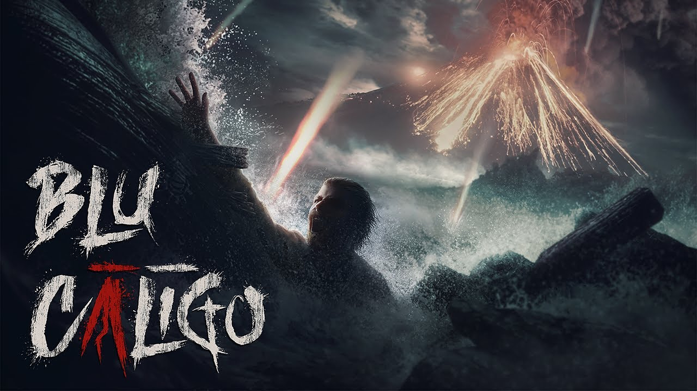
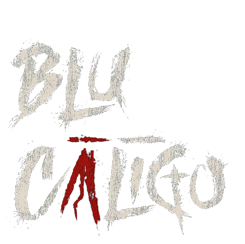
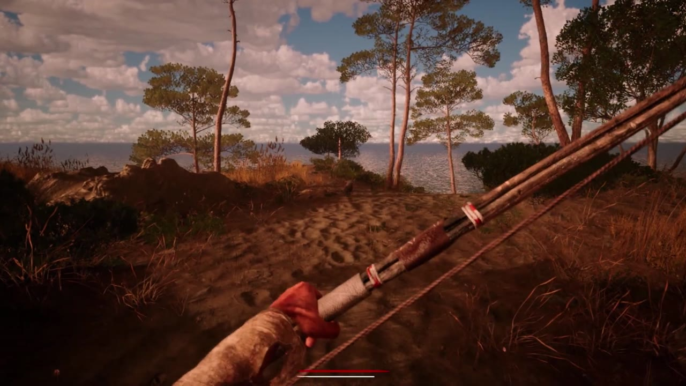
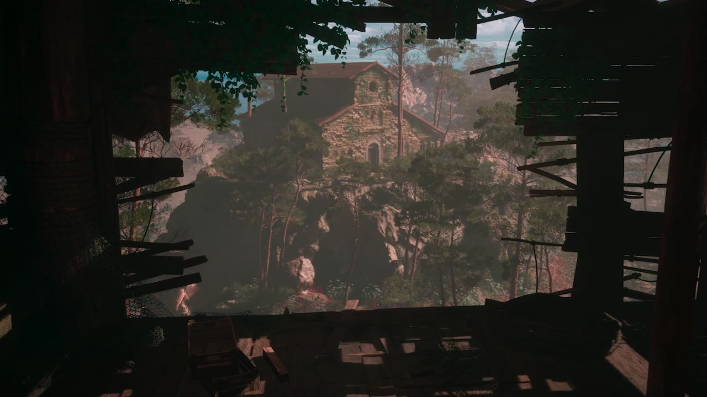
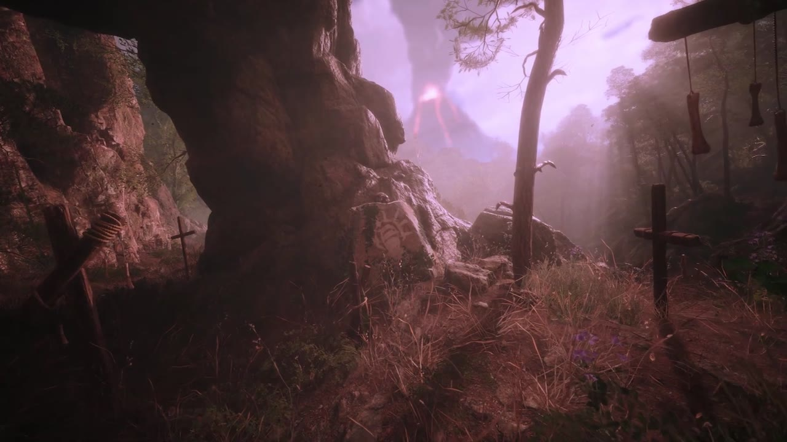
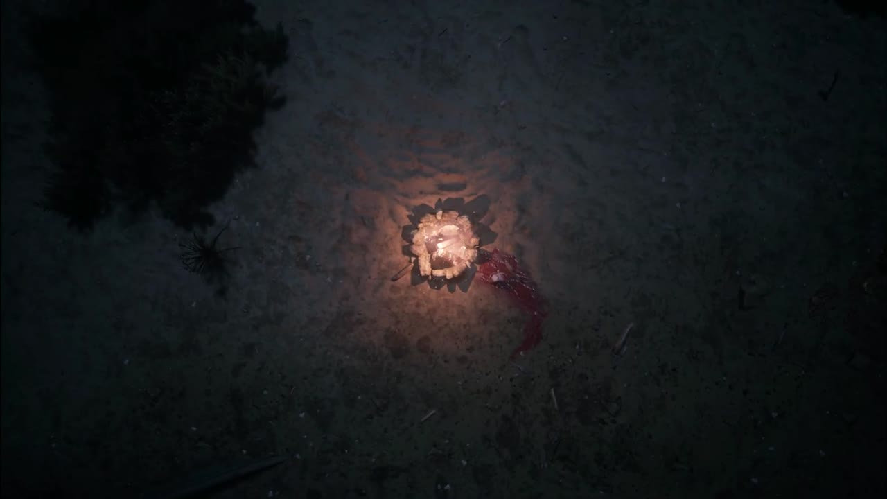
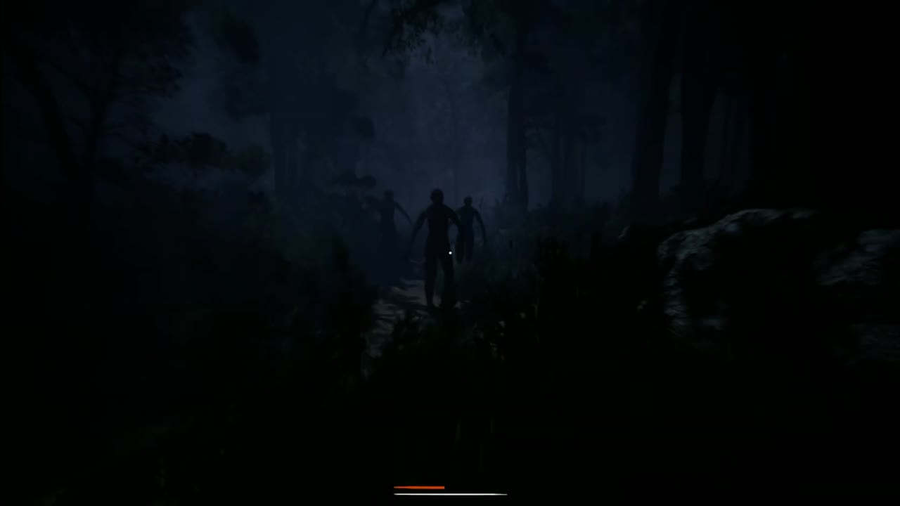
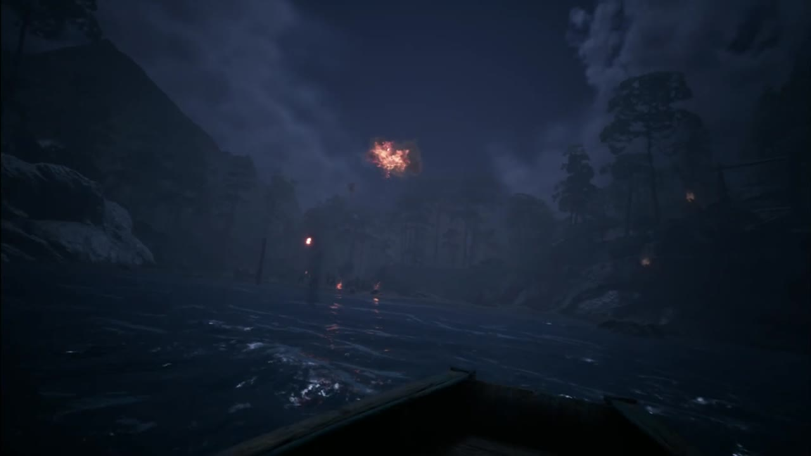

Eostrix Studio — nov 2022 – apr 2024

/Introduzione
Blu Caligo è un horror survival in prima persona su un’isola del Mediterraneo, il primo titolo indie di Eostrix Studio. Nel team facevo il gameplay e l’AI su Unreal Engine, scrivendo in Blueprint.
Da novembre 2022 ad aprile 2024 ho lavorato sull’AI di conigli e nemici, sulle armi, sul fischietto e sulla torcia, e sui sistemi di sopravvivenza del giocatore.
/Cosa_Ho_Fatto
I conigli. A novembre 2022 ho rifatto da zero l’AI della fauna, partendo dai conigli. In un Behavior Tree ho messo movimento e rotazione fluida, e ho gestito i momenti in cui un coniglio usciva dal NavMesh. Al comportamento ho collegato VFX e UI, e i conigli si spaventavano quando passava una freccia. Ho preparato anche BP_Base_AI, la base comune dell’AI.
I nemici. La cartella AI/Enemy è l’area che ho toccato di più. Ho costruito la struttura base dei nemici, con la percezione uditiva e una state machine con gli stati Normal, Look Around, Detect, Reaction, Attack e Death. Su Blackboard e Behavior Tree ho messo l’inseguimento, la reazione ai colpi e il combo break, con calcio e schivata. Quando gli attaccanti erano tre o più, i nemici accerchiavano e pattugliavano. Ho aggiunto i nemici mascherati e uno spawner che assegnava skin casuali. Sui colpi ho messo sangue e suoni, e alla morte gestivo la mesh del nemico. A ottobre 2023 ho riscritto la Enemy State Machine, e dopo ho continuato a rifattorizzarla.
Le armi. Ho lavorato alle frecce, con penetrazione e outline, all’arco, all’ascia e ai socket a cui le armi si agganciano. Il danno arrivava al giocatore, e l’HUD lo mostrava.
Fischietto e torcia. Ho aggiunto il fischietto e la torcia, la lanterna del giocatore. Li ho legati al controller con il mapping dei tasti, e ho portato sul controller anche l’interazione da menu.
La sopravvivenza. Da novembre 2023 ad aprile 2024 ho lavorato sui sistemi di sopravvivenza del giocatore. Ho fatto le barre di salute e di sete, la fame con lo starve, il componente di nutrizione, la stamina e il componente dell’energia. Per il sonno ho scritto le meccaniche e lo Sleep behaviour. Le fasi del giorno passavano da DayPhase. Ho aggiunto il salvataggio del player, e l’HUD mostrava lo stato.
/Trailer_Pubblico
/Tecnologie_Usate
Unreal Engine
Nel progetto del team ho usato Behavior Tree, Blackboard, NavMesh e le state machine dei nemici.
Blueprint
Ho scritto il gameplay in Blueprint: AI, armi, fischietto, torcia e sistemi di sopravvivenza.
PC
Lo sviluppo era su PC, con il controller mappato per le azioni e per il menu.
/Crediti
- Studio — Eostrix Studio
- Gameplay e AI — Antonio Troiano (nov 2022 – apr 2024)
- Design, narrativa, audio — team Eostrix Studio
/Mie_Note_Sul_Progetto
Blu Caligo è l’esperienza più lunga che ho fatto in un team su Unreal, prima di passare a Unity XR. Ci sono rimasto da novembre 2022 ad aprile 2024, tra l’AI dei conigli e dei nemici e i sistemi di sopravvivenza del giocatore.
— Antonio Troiano
/Frame_Dei_Trailer
Dal first trailer e da Who are they?, tre fotogrammi ciascuno.

First trailer · Costa e arpione

First trailer · Chiesa tra i pini

First trailer · Croci nella nebbia

Who are they? · Cerchio acceso

Who are they? · Figure nel bosco

Who are they? · Barca di notte